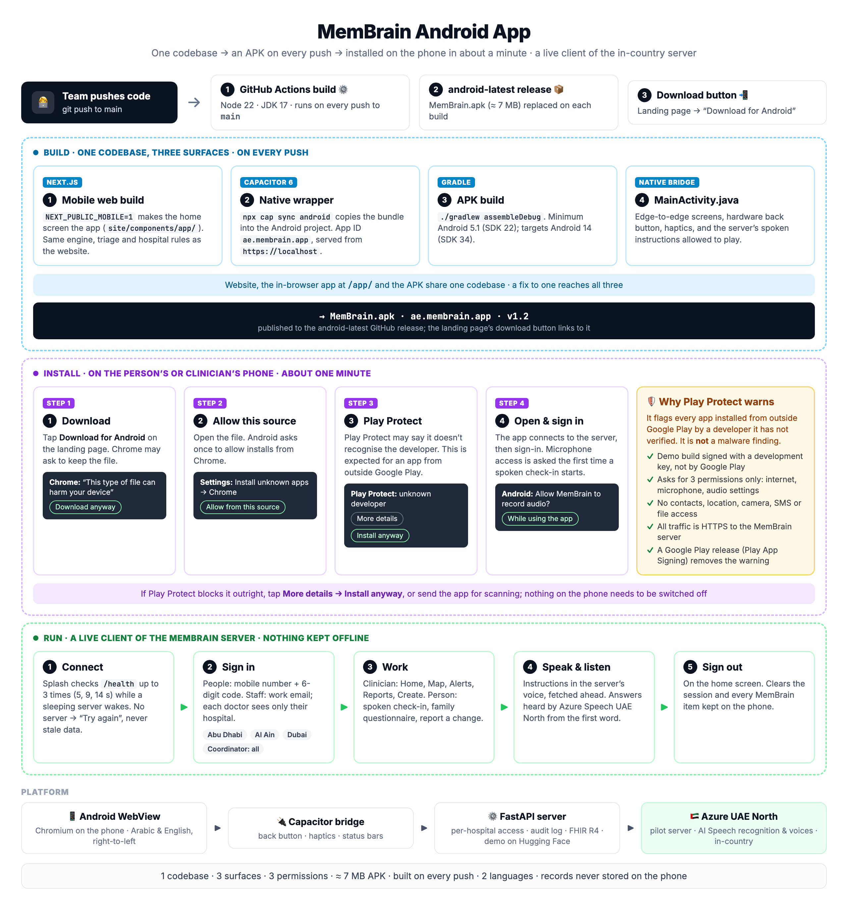

This appendix extends Section 2.2. It shows how the APK is built and published, how a person or clinician installs it on an Android phone in about a minute, why Google Play Protect may warn during installation and what to say about it, and how the app behaves once it is running.

Figure A1 · The MemBrain Android app: built from the same codebase on every push, installed from the android-latest release, and run as a live client of the MemBrain server.
| STEP | WHAT THE PERSON DOES | WHAT ANDROID SHOWS |
|---|---|---|
| 1 · Download | Open the MemBrain landing page in Chrome and tap Download for Android. The link fetches MemBrain.apk from the android-latest GitHub release. | Chrome may say the file type can harm the device: tap Download anyway. |
| 2 · Allow this source | Tap the finished download to open it. | The first time, Android asks to allow installs from Chrome: Settings → Allow from this source, then go back. |
| 3 · Play Protect | Tap Install. | Play Protect may warn that it does not recognise the developer, or offer to scan the app: tap More details → Install anyway, or Scan app and then install. |
| 4 · Open & sign in | Tap Open. The splash connects to the server (up to a minute if it was asleep), then sign in. | The microphone permission is asked the first time a spoken check-in or dictation starts: choose While using the app. |
Play Protect warns about apps installed from outside Google Play by a developer Google has not verified. The MemBrain APK is a demonstration build signed with a development key and distributed from the team's GitHub release, so it meets both conditions. The warning is about where the app came from, not about anything the app does: it is not a malware detection. The app requests only three permissions (INTERNET, RECORD_AUDIO, MODIFY_AUDIO_SETTINGS), has no access to contacts, location, camera, SMS or files, sends everything over HTTPS to the MemBrain server, and keeps no clinical records on the phone. Its full source and build pipeline are public in the repository (mobile/, .github/workflows/android.yml).
| WHAT HAPPENS | WHY | WHAT TO DO |
|---|---|---|
| “App not installed” when updating | Each automated build is signed with a fresh development key, so Android refuses to install a new copy over an older one. | Uninstall the old MemBrain first (long-press the icon → Uninstall), then install the new APK. |
| “Can't reach the MemBrain server” | No internet, or the demo server is still waking up. | Check the connection and tap Try again; the first start after a quiet period can take up to a minute. |
| No microphone in the check-in | The microphone permission was refused. | Settings → Apps → MemBrain → Permissions → Microphone → Allow. Answers can also be typed. |
| Instructions are not heard | Media volume is low; spoken instructions are audio from the server. | Turn up the media volume and tap Say it again; the text is always on screen. |
| Signing out | One phone may be shared, for example by clinic staff. | Sign out is at the top of the home screen (and in the clinician profile and the person's Me tab); it clears the session and everything MemBrain kept on the phone. |
A Google Play release removes the warnings: a Play Console account, a fixed upload key with Play App Signing, a store listing with the Data safety form and health-app declaration, and an internal or closed testing track so pilot clinicians install from the Play Store. A fixed signing key also lets new versions install over old ones.
The same Capacitor project can produce an iOS build; it has not been produced yet. Until then, iPhone users use the same app in Safari at /app/ on the website, with the same sign-in, check-in and hospital rules.